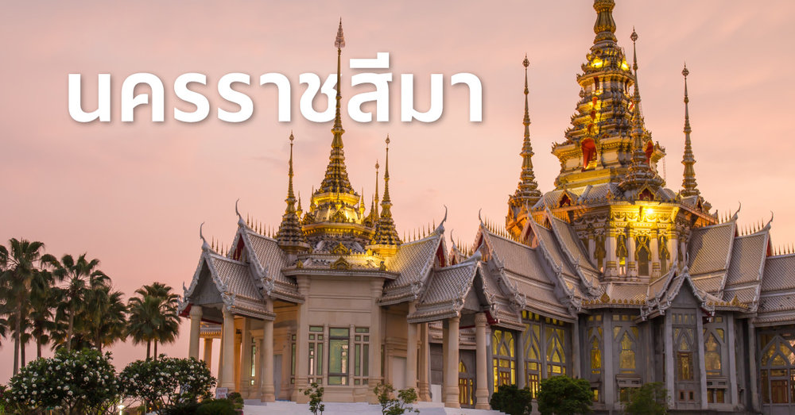
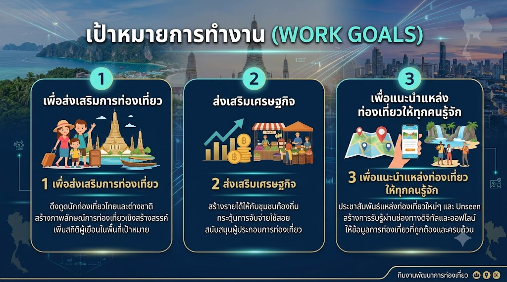

เกี่ยวกับเมืองโคราช (นครราชสีมา)

นครราชสีมา หรือที่รู้จักกันในชื่อ "โคราช" เป็นจังหวัดที่มีพื้นที่มากที่สุดในประเทศไทยและถือเป็น "ประตูสู่ภาคตะวันออกเฉียงเหนือ" อุดมไปด้วยความประทับใจทางประวัติศาสตร์ วัฒนธรรม และธรรมชาติที่สมบูรณ์
โคราชมีแหล่งท่องเที่ยวที่มีชื่อเสียงระดับโลกมากมาย เช่น อุทยานแห่งชาติเขาใหญ่ (มรดกโลกทางธรรมชาติ), ปราสาทหินพิมาย, วัดบ้านไร่ (หลวงพ่อคูณ) และยังมีภูมิปัญญาท้องถิ่นที่เป็นเอกลักษณ์ ทั้งผ้าไหมปักธงชัย และดินเผาด่านเกวียน
ดูสถานที่ท่องเที่ยวแนะนำเพิ่มเติม ;เป้าหมายของเรา (KTG Goal)

KTG (Korat Tourism Group) มุ่งมั่นที่จะส่งเสริมและยกระดับการท่องเที่ยวในจังหวัดนครราชสีมา ให้เป็นจุดหมายปลายทางที่เข้าถึงง่าย น่าสนใจ และสร้างรายได้กระจายสู่ชุมชนท้องถิ่นอย่างยั่งยืน
เราพร้อมเป็นสื่อกลางในการนำเสนอข้อมูลการท่องเที่ยวที่ครบถ้วน ทั้งสถานที่ไฮไลท์ ที่พัก สินค้า OTOP และกิจกรรมวัฒนธรรม เพื่อเปิดประสบการณ์ที่ดีที่สุดให้กับนักท่องเที่ยวทุกคน